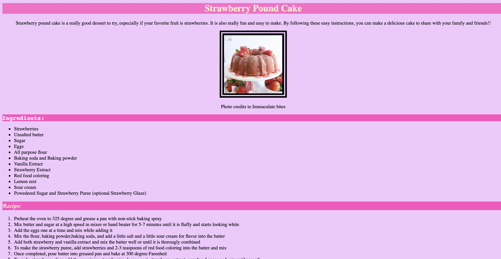
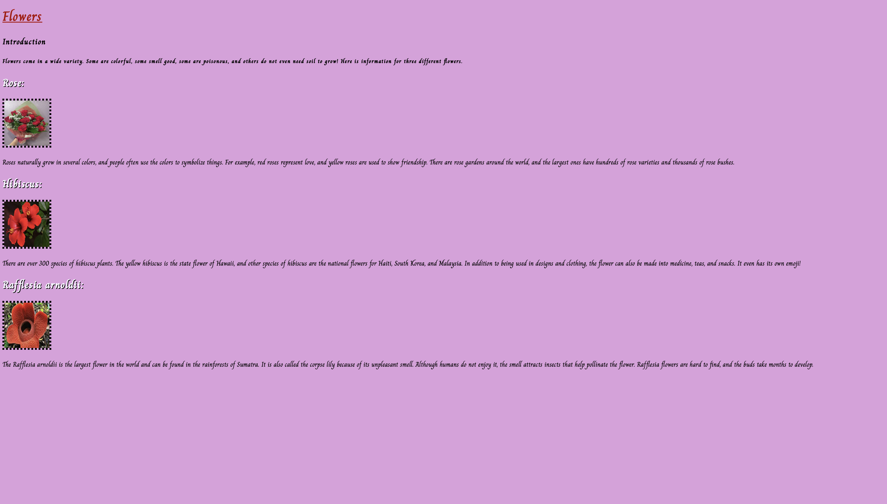

⋆˙⟡♡Welcome to my Portfolio!⋆˙⟡♡
Here, you would see some images of the websites and webpages that I've created!
I designed an aesthetic and informative webpage on how to make a tasty strawberry pound cake!
As a beginner to HTML and CSS at this time, I created a webpage that consisted of a table of colors of my choice and their color codes, in which I used for references until I understood styling better!

In this webpage, I practiced my CSS skills and designed a page about flowers that I like and facts about them

Im this webpage, I took my favorite colors and some of my favorite animals and made a page about them, which I later on turned into a website!